Temporal networks of interactions in course discussions
Source:vignettes/articles/thought-chains.Rmd
thought-chains.RmdThis vignette demonstrates temporal network analysis of coded
contributions to asynchronous course discussions. The
thought_chains dataset provides reply relationships in tidy
format, with contributions classified into categories such as inquiring,
arguing, and approving. Contribution categories constitute the vertices,
and directed ties connect the category of a reply to the category of the
message it addresses.
The analysis examines how relationships among contribution categories evolve over time, which categories receive replies, and how categories are connected through time-respecting paths. Network measures, centrality indices, relational durations, and temporal paths describe the structure, timing, and reachability of these relationships.
Data
The dataset is synthetic and based on the original data analysed by Saqr, López-Pernas, and Törmänen (2026). It is used to demonstrate temporal network construction, measurement, and visualisation. Results reported in this vignette describe the supplied dataset and should not be interpreted as empirical findings from the original study.
The synthetic dataset contains 23,017 reply links among nine
contribution categories, spanning 1,169 discussions in 29 groups across
five courses. The relational endpoints are from, the
category assigned to the reply, and to, the category
assigned to the message it addresses. The variable time
records when the reply was posted; discussion,
course, and group identify the discussion
thread, course, and course group, respectively. The dataset includes
9,452 self-links, where the reply and the message it addresses share the
same category.
## from to time participant discussion group
## 1 Coordinating Coordinating 2006-09-23 18:06:29 P028 1 A_01
## 2 Coordinating Coordinating 2006-09-23 18:06:29 P028 1 A_01
## 3 Coordinating Coordinating 2006-09-23 18:06:29 P028 1 A_01
## 4 Coordinating Coordinating 2006-09-23 18:06:29 P028 1 A_01
## 5 Coordinating Coordinating 2006-09-23 18:06:29 P028 1 A_01
## 6 Coordinating Coordinating 2006-09-23 18:06:29 P028 1 A_01
## course
## 1 A
## 2 A
## 3 A
## 4 A
## 5 A
## 6 AThe network
Each reply is represented as a relational spell with onset at the time of posting and termination at the end of its discussion. This specification treats the relationship as active for the remaining duration of the discussion.
The call to dynet() explicitly identifies
discussion as the thread variable through
thread = "discussion". Setting
thread_clock = "relative" expresses time in days since the
first recorded reply in each discussion, while loops = TRUE
retains self-links and observation_end = 4 specifies a
four-day observation period. The constructor automatically recognises
course as the session variable.
dn <- dynet(thought_chains, thread = "discussion", thread_clock = "relative",
loops = TRUE, observation_end = 4)## Keeping 9452 self-loop event(s); each adds two to its vertex's degree.
dn## # Temporal network (threaded format, directed) | a cograph netobject
## # 9 vertices | 23017 edge spells | 80 distinct pairs
## # observed from 0 to 4 days, binned every 1
## # 5 sessions: A, B, C, D, E
##
## from to start end duration weight session thread participant
## Approving Approving 0 0 0 1 B 282 P181
## Approving Drafting 0 0 0 1 B 300 P189
## Approving Inquiring 0 0 0 1 D 839 P063
## Approving Resourcing 0 0 0 1 A 62 P006
## Approving Resourcing 0 0 0 1 A 187 P232
## Approving Resourcing 0 0 0 1 A 187 P232
## group
## B_02
## B_03
## D_02
## A_05
## A_04
## A_04
## # 23011 more spells. summary() describes the network; plot() draws it.
summary(dn)## property value
## 1 format threaded
## 2 directed yes
## 3 vertices 9
## 4 edge spells 23017
## 5 distinct pairs 80
## 6 time unit days
## 7 observed from 0
## 8 observed to 4
## 9 span 4
## 10 bin width 1
## 11 time bins 4
## 12 mean snapshot density 0.8958
## 13 temporal density not computed
## 14 sessions 5
## 15 vertex attributes noneTies are directed from the category of a reply to the category of the message it addresses. Paths following these ties therefore represent directed reply relationships between contribution categories. They do not, by themselves, establish the forward dissemination of ideas or the transmission of particular content.
Setting thread_clock = "relative" aligns each discussion
to its first recorded reply. Temporal overlap consequently represents
comparable elapsed times within discussions, rather than simultaneous
activity on a shared calendar. The constructor recognises
course as the session variable. With the default
sessions = "bounded", each temporal path remains within a
single course, although it may combine ties from different discussions
or groups within that course. These paths describe category-level
reachability under the specified alignment and session boundaries.
The resulting temporal network contains nine vertices and 23,017 relational spells distributed across 80 of the 81 possible ordered pairs, including self-pairs. The mean snapshot density is 0.8958. This high density reflects the specification that relational spells remain active until their discussions terminate.
Ties over time
events() computes relational spell onset and termination
counts over successive half-day intervals. Setting both
step and window to 0.5 produces
non-overlapping intervals.
tie_events <- events(dn, measure = c("formation", "dissolution"),
step = 0.5, window = 0.5)
tie_events## # Edge dynamics (graph-level)
## # 8 time points, 0.5 per bin | time in days
## # measures: formation, dissolution
## time measure value
## 0.0 formation 13094
## 0.0 dissolution 3842
## 0.5 formation 4435
## 0.5 dissolution 2960
## 1.0 formation 2442
## 1.0 dissolution 5348
## 1.5 formation 1457
## 1.5 dissolution 2819
## 2.0 formation 1021
## 2.0 dissolution 3675
## 2.5 formation 377
## 2.5 dissolution 1996
## # 4 more rows. summary() aggregates them; plot() draws them.The first three intervals contain 13,094, 4,435, and 2,442 onsets, respectively, compared with 10 in the final interval. Terminations peak in the third interval, with 5,348 spells ending. Relational spell onsets are therefore concentrated early in the observation period.
The timeline displays relational activity for the 40 ordered pairs with the most spells, using an hourly grid. Colour represents the proportion of each interval during which the pair was active, counting overlapping spells once.
plot(dn, type = "timeline", step = 1 / 24)
The activity plot displays onset and termination counts alongside the number of active relational spells over time.
plot(dn, type = "activity")
Drawing the network
Setting type = "network" displays the union of ties
active during the observation period. The network is drawn using
cograph, to which the layout argument is passed.
plot(dn, type = "network", layout = "oval")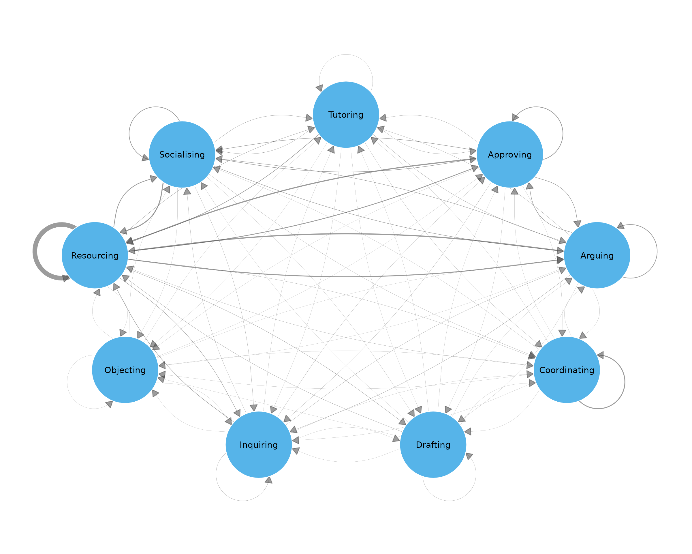
The binary union records whether each ordered pair was connected at
any time during the observation period. To account for duration,
collapse_network() with
weight = "union_duration" weights each pair by the total
duration for which at least one relational spell was active, counting
overlapping spells once.
collapsed <- collapse_network(dn, weight = "union_duration")
plot(collapsed, layout = "oval")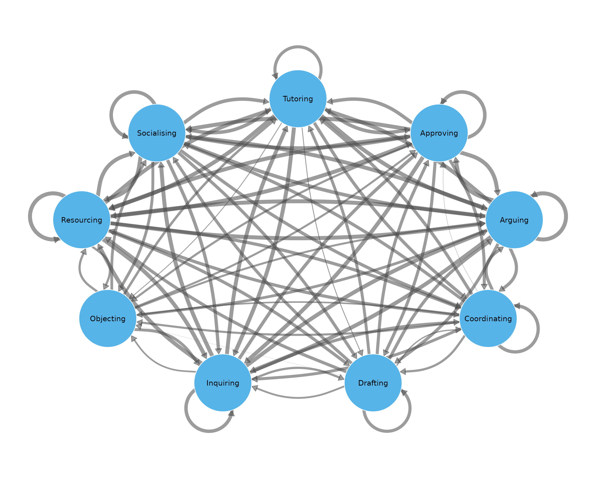
Setting type = "snapshots" displays the network at nine
equally spaced time points using a common layout.
plot(dn, type = "snapshots", panels = 9)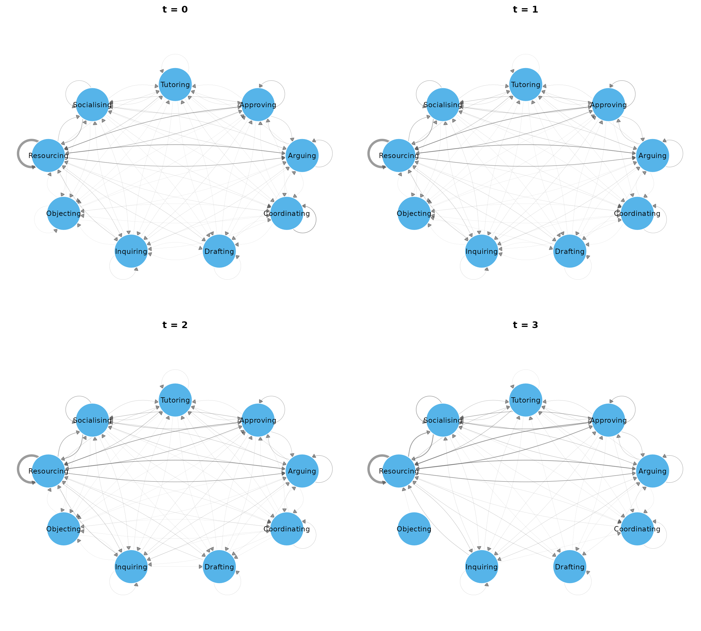
The proximity timeline represents changes in the relationships among contribution categories. Network distances are computed within overlapping temporal slices and reduced to a single coordinate for each category. Lines connect these coordinates across slices, with proximity indicating shorter network distances within a slice. Line thickness represents degree by default. The following call specifies 80 slices and five accompanying phase networks.
plot(dn, type = "proximity", phases = 5, slices = 80)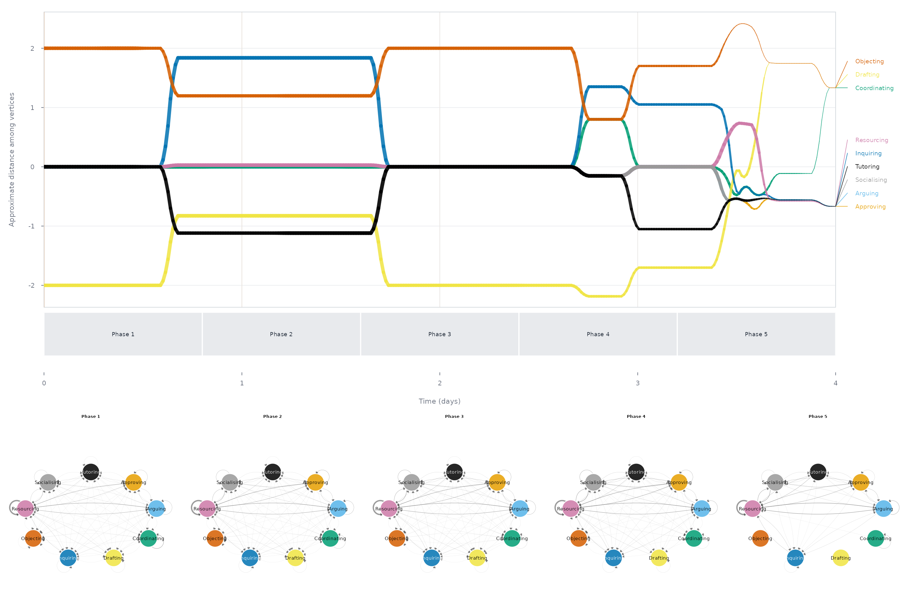
Setting measure = "betweenness" maps line thickness to
betweenness centrality, while networks = FALSE omits the
phase networks.
plot(dn, type = "proximity", measure = "betweenness",
networks = FALSE, slices = 80)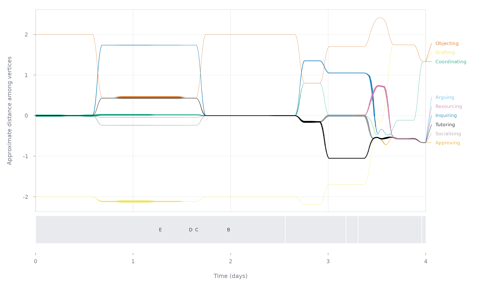
Layered visualisations represent successive temporal slices as
separate network layers. Setting type = "layers" and
step = 4 / 3 displays three slices as planes.
plot(dn, type = "layers", step = 4 / 3, layout = "circle")
Setting type = "stack" and
cumulative = TRUE produces a cumulative projection in which
each plane includes all ties active up to that slice.
plot(dn, type = "stack", step = 4 / 3, cumulative = TRUE)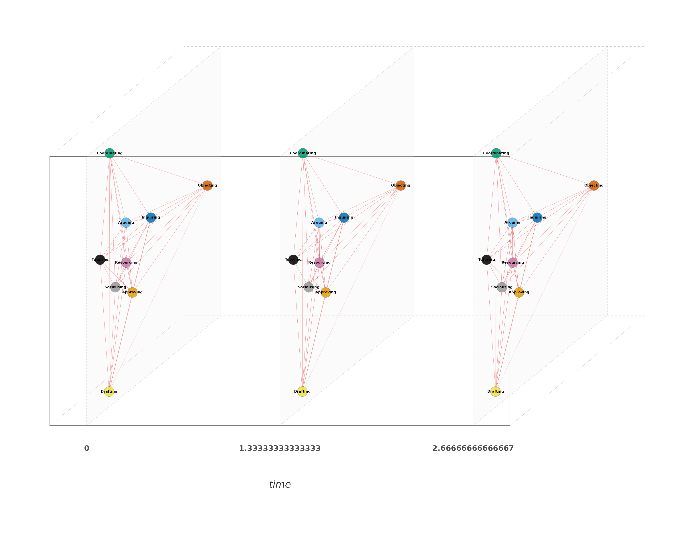
Structure over time
Dynet computes both graph-level and vertex-level metrics for temporal networks. Graph-level metrics characterise the network as a whole, describing properties such as density, reciprocity, and connectivity. Vertex-level metrics characterise the structural position of individual vertices through measures such as degree, closeness, and betweenness. In this vignette, vertices represent contribution categories, so vertex-level metrics describe the positions of these categories within the discussion network. Both levels can be examined over successive temporal intervals to quantify changes in network structure and vertex position.
metrics() computes graph-level measures over specified
temporal intervals. Setting both step and
window to 1 / 24 produces successive,
non-overlapping hourly intervals. Density measures the proportion of
possible directed ties present, while reciprocity measures the
proportion of directed ties whose reverse is also present. Efficiency
and connectedness are two of Krackhardt’s (1994) indices for
characterising departures from an out-tree structure. The number of
edges and mean degree provide additional descriptions of network
connectivity.
structure <- metrics(dn,
measure = c("density", "reciprocity", "efficiency",
"connectedness", "edges", "mean_degree"),
step = 1 / 24, window = 1 / 24)
structure## # Graph structure (graph-level)
## # 96 time points, 0.04166667 per bin | time in days
## # measures: density, reciprocity, efficiency, connectedness, edges, mean_degree
## time measure value
## 0.00000000 density 0.7916667
## 0.00000000 reciprocity 0.9122807
## 0.00000000 efficiency 0.2343750
## 0.00000000 connectedness 1.0000000
## 0.00000000 edges 57.0000000
## 0.00000000 mean_degree 6.3333333
## 0.04166667 density 0.8194444
## 0.04166667 reciprocity 0.9152542
## 0.04166667 efficiency 0.2031250
## 0.04166667 connectedness 1.0000000
## 0.04166667 edges 59.0000000
## 0.04166667 mean_degree 6.5555556
## # 564 more rows. summary() aggregates them; plot() draws them.
plot(structure, type = "ridge")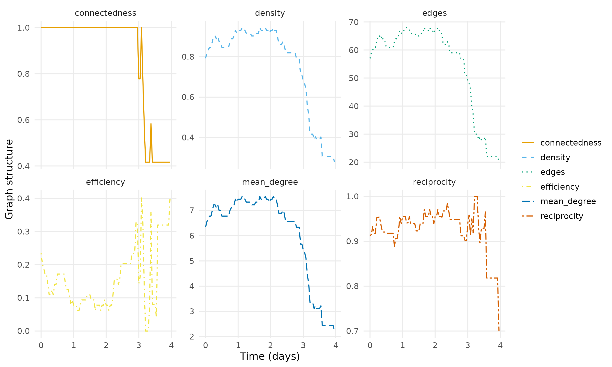
Setting type = "ridge" displays a separate panel for
each measure. In the first hour, the network contains 57 directed ties
and has a density of 0.79. Connectedness is 1, indicating that all
contribution categories belong to a single weakly connected component;
this does not imply that every category is directly connected to every
other category. Reciprocity is 0.91, indicating that most directed ties
have a corresponding reverse tie within the interval. Density increases
to 0.82 in the second hour.
The dyad census (Holland and Leinhardt, 1976) classifies unordered
pairs of distinct vertices as mutual, asymmetric, or null, depending on
whether both, one, or neither of the possible directed ties are present.
The corresponding counts are requested through measure.
dyads <- metrics(dn, measure = c("mutual", "asymmetric", "null"),
step = 1 / 24, window = 1 / 24)
dyads## # Graph structure (graph-level)
## # 96 time points, 0.04166667 per bin | time in days
## # measures: mutual, asymmetric, null
## time measure value
## 0.00000000 mutual 26
## 0.00000000 asymmetric 5
## 0.00000000 null 5
## 0.04166667 mutual 27
## 0.04166667 asymmetric 5
## 0.04166667 null 4
## 0.08333333 mutual 28
## 0.08333333 asymmetric 4
## 0.08333333 null 4
## 0.12500000 mutual 28
## 0.12500000 asymmetric 5
## 0.12500000 null 3
## # 276 more rows. summary() aggregates them; plot() draws them.
plot(dyads)
In the first hour, the 36 unordered pairs comprise 26 mutual, five asymmetric, and five null dyads. These counts describe connectivity between distinct contribution categories and exclude self-links.
Setting measure = "triads" computes the sixteen-class
directed triad census, which classifies sets of three distinct vertices
according to their directed ties. The heatmap displays changes in the
frequency of each triad class across hourly intervals.
triads <- metrics(dn, measure = "triads", step = 1 / 24, window = 1 / 24)
triads## # Triad census (graph-level)
## # 96 time points, 0.04166667 per bin | time in days
## # measures: triad_003, triad_012, triad_102, triad_021D, triad_021U, triad_021C, triad_111D, triad_111U, triad_030T, triad_030C, triad_201, triad_120D, triad_120U, triad_120C, triad_210, triad_300
## time measure value
## 0 triad_003 0
## 0 triad_012 1
## 0 triad_102 9
## 0 triad_021D 0
## 0 triad_021U 0
## 0 triad_021C 0
## 0 triad_111D 0
## 0 triad_111U 8
## 0 triad_030T 0
## 0 triad_030C 0
## 0 triad_201 7
## 0 triad_120D 3
## # 1524 more rows. summary() aggregates them; plot() draws them.
plot(triads, type = "heatmap")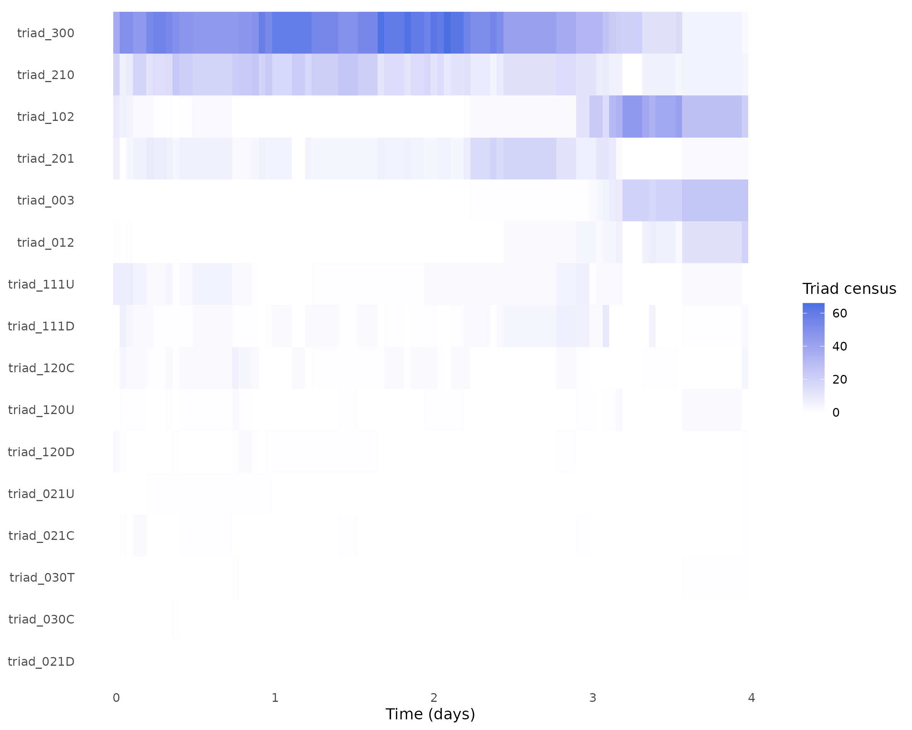
Additional graph-level statistics describe local configurations of directed ties. These include two-stars, two-paths, triangles, and sums of indegrees and outdegrees raised to the power 1.5. Such statistics are also used as terms in exponential-family random graph models (Morris, Handcock and Hunter, 2008).
local <- metrics(dn,
measure = c("indegree_1_5", "outdegree_1_5", "triangles",
"in_2stars", "out_2stars", "two_paths"),
step = 1 / 24, window = 1 / 24)
local## # Graph structure (graph-level)
## # 96 time points, 0.04166667 per bin | time in days
## # measures: indegree_1_5, outdegree_1_5, triangles, in_2stars, out_2stars, two_paths
## time measure value
## 0.00000000 indegree_1_5 146.3021
## 0.00000000 outdegree_1_5 148.0187
## 0.00000000 triangles 376.0000
## 0.00000000 in_2stars 161.0000
## 0.00000000 out_2stars 166.0000
## 0.00000000 two_paths 325.0000
## 0.04166667 indegree_1_5 155.0977
## 0.04166667 outdegree_1_5 155.3815
## 0.04166667 triangles 436.0000
## 0.04166667 in_2stars 176.0000
## 0.04166667 out_2stars 177.0000
## 0.04166667 two_paths 356.0000
## # 564 more rows. summary() aggregates them; plot() draws them.
plot(local, type = "ridge")
The first hourly interval contains 376 directed triangles and 325 two-paths; the corresponding counts in the second interval are 436 and 356.
Vertex-level metrics
centrality_series() computes centrality measures for
each contribution category over specified temporal intervals. The
following call requests degree, closeness, and betweenness (Freeman,
1979), eigenvector centrality, flow betweenness (Freeman, Borgatti and
White, 1991), and diffusion degree (Kundu, Murthy and Pal, 2011). These
measures characterise the positions of categories within each hourly
network. Paths used in these interval-specific calculations are
evaluated within the corresponding network; temporal centrality based on
time-respecting paths is considered separately below.
centrality <- centrality_series(dn,
measure = c("degree", "closeness", "betweenness",
"eigenvector", "flow_betweenness",
"diffusion"),
step = 1 / 24, window = 1 / 24)
centrality## # Centrality (node-level)
## # 9 vertices | 96 time points, 0.04166667 per bin | time in days
## # measures: degree, closeness, betweenness, eigenvector, flow_betweenness, diffusion
## time node measure value
## 0 Approving degree 14.0000000
## 0 Arguing degree 17.0000000
## 0 Coordinating degree 15.0000000
## 0 Drafting degree 15.0000000
## 0 Inquiring degree 15.0000000
## 0 Objecting degree 7.0000000
## 0 Resourcing degree 16.0000000
## 0 Socialising degree 18.0000000
## 0 Tutoring degree 15.0000000
## 0 Approving closeness 0.8888889
## 0 Arguing closeness 1.0000000
## 0 Coordinating closeness 0.8888889
## # 5172 more rows. summary() aggregates them; plot() draws them.
plot(centrality, type = "heatmap")
Setting type = "heatmap" displays centrality values by
category and hourly interval. Setting type = "ridge"
displays their trajectories over the observation period.
plot(centrality, type = "ridge")
In the first hour, Socialising has the highest degree
(18), and Objecting has the lowest (7).
Arguing has a closeness centrality of 1, indicating that it
reaches every other category in one step under the specified
calculation. Across the 96 hourly intervals, Objecting has
the lowest mean degree, closeness, and betweenness.
For directed networks, mode specifies the direction used
to calculate degree. Because ties are directed from the reply category
to the category being addressed, mode = "in" measures
incoming connections from replying categories, whereas
mode = "out" measures outgoing connections to addressed
categories.
in_degree <- centrality_series(dn, measure = "degree", mode = "in",
step = 1 / 24, window = 1 / 24)
out_degree <- centrality_series(dn, measure = "degree", mode = "out",
step = 1 / 24, window = 1 / 24)
plot(in_degree, type = "heatmap")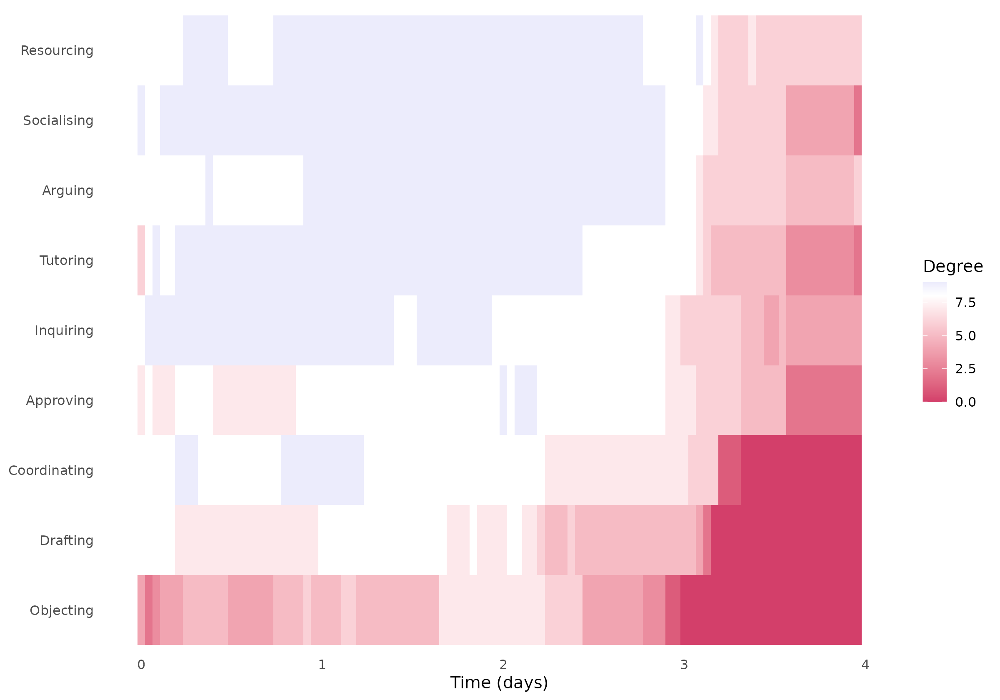
plot(out_degree, type = "heatmap")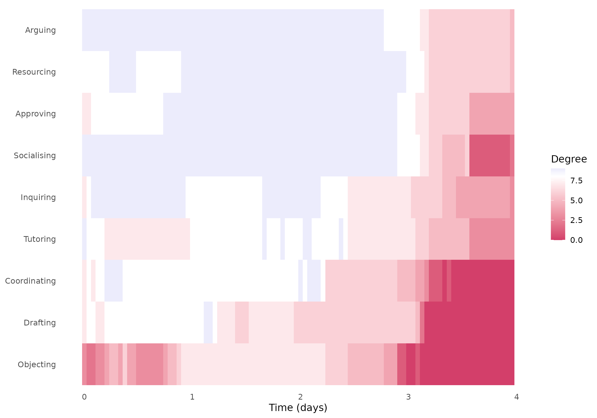
Prestige indices characterise a vertex through its incoming
relationships (Wasserman and Faust, 1994). Indegree prestige measures
direct incoming connections. Domain proximity prestige incorporates
indirect connections by dividing the proportion of other vertices that
can reach the focal vertex by their mean directed distance to it.
Setting measure = "prestige" requests prestige, with the
variant specified through prestige.
prestige_indegree <- centrality_series(dn, measure = "prestige",
prestige = "indegree",
step = 1 / 24, window = 1 / 24)
prestige_proximity <- centrality_series(dn, measure = "prestige",
prestige = "domain.proximity",
step = 1 / 24, window = 1 / 24)
plot(prestige_indegree, type = "heatmap")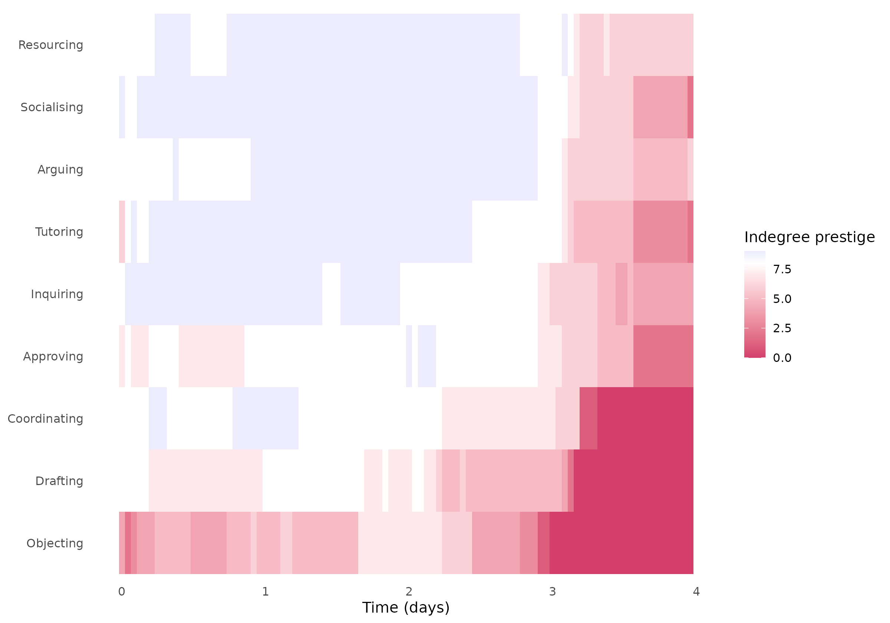
plot(prestige_proximity, type = "heatmap")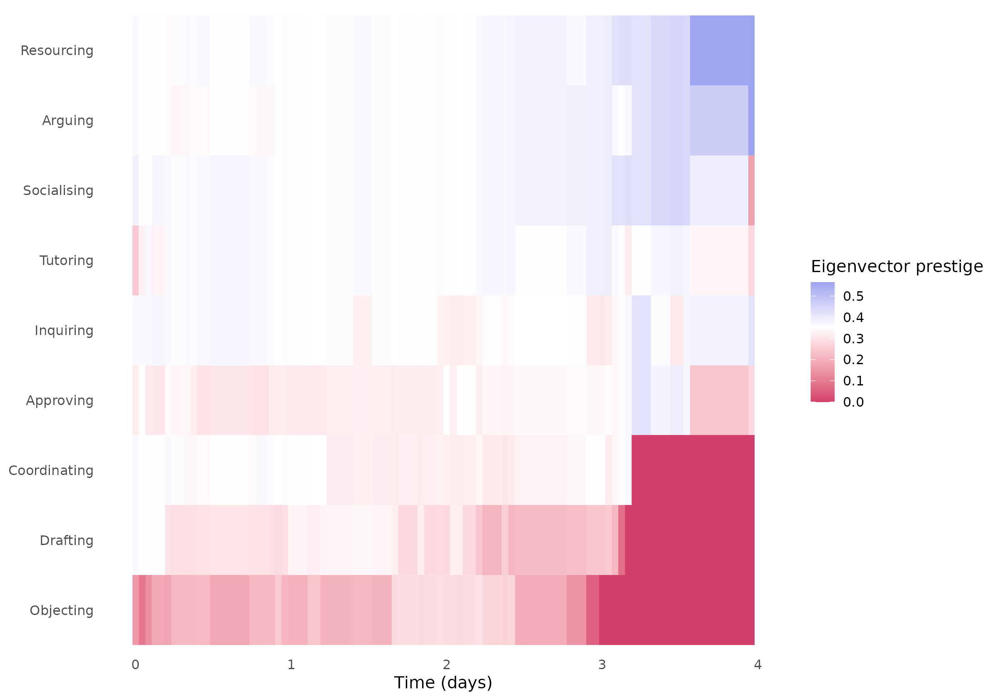
Flows between codes
mixing() summarises directed relationships between
categories of a vertex attribute within each temporal interval. Setting
attribute = "name" uses the vertex names, which represent
contribution categories in this network. The result contains counts of
distinct active ordered vertex pairs for each hourly interval and pair
of categories. Repeated spells and their weights do not multiply these
counts. Setting type = "heatmap" displays all 81 ordered
pairs, including self-pairs.
flows <- mixing(dn, attribute = "name", step = 1 / 24, window = 1 / 24)
flows## # Mixing by name (graph-level)
## # 96 time points, 0.04166667 per bin | time in days
## # measures: Approving -> Approving, Arguing -> Approving, Coordinating -> Approving, Drafting -> Approving, Inquiring -> Approving, Objecting -> Approving, Resourcing -> Approving, Socialising -> Approving, Tutoring -> Approving, Approving -> Arguing, Arguing -> Arguing, Coordinating -> Arguing, Drafting -> Arguing, Inquiring -> Arguing, Objecting -> Arguing, Resourcing -> Arguing, Socialising -> Arguing, Tutoring -> Arguing, Approving -> Coordinating, Arguing -> Coordinating, Coordinating -> Coordinating, Drafting -> Coordinating, Inquiring -> Coordinating, Objecting -> Coordinating, Resourcing -> Coordinating, Socialising -> Coordinating, Tutoring -> Coordinating, Approving -> Drafting, Arguing -> Drafting, Coordinating -> Drafting, Drafting -> Drafting, Inquiring -> Drafting, Objecting -> Drafting, Resourcing -> Drafting, Socialising -> Drafting, Tutoring -> Drafting, Approving -> Inquiring, Arguing -> Inquiring, Coordinating -> Inquiring, Drafting -> Inquiring, Inquiring -> Inquiring, Objecting -> Inquiring, Resourcing -> Inquiring, Socialising -> Inquiring, Tutoring -> Inquiring, Approving -> Objecting, Arguing -> Objecting, Coordinating -> Objecting, Drafting -> Objecting, Inquiring -> Objecting, Objecting -> Objecting, Resourcing -> Objecting, Socialising -> Objecting, Tutoring -> Objecting, Approving -> Resourcing, Arguing -> Resourcing, Coordinating -> Resourcing, Drafting -> Resourcing, Inquiring -> Resourcing, Objecting -> Resourcing, Resourcing -> Resourcing, Socialising -> Resourcing, Tutoring -> Resourcing, Approving -> Socialising, Arguing -> Socialising, Coordinating -> Socialising, Drafting -> Socialising, Inquiring -> Socialising, Objecting -> Socialising, Resourcing -> Socialising, Socialising -> Socialising, Tutoring -> Socialising, Approving -> Tutoring, Arguing -> Tutoring, Coordinating -> Tutoring, Drafting -> Tutoring, Inquiring -> Tutoring, Objecting -> Tutoring, Resourcing -> Tutoring, Socialising -> Tutoring, Tutoring -> Tutoring
## # active binary-dyad counts between vertex groups per time bin
## time measure value from_group to_group
## 0 Approving -> Approving 1 Approving Approving
## 0 Arguing -> Approving 1 Arguing Approving
## 0 Coordinating -> Approving 0 Coordinating Approving
## 0 Drafting -> Approving 1 Drafting Approving
## 0 Inquiring -> Approving 1 Inquiring Approving
## 0 Objecting -> Approving 0 Objecting Approving
## 0 Resourcing -> Approving 1 Resourcing Approving
## 0 Socialising -> Approving 1 Socialising Approving
## 0 Tutoring -> Approving 1 Tutoring Approving
## 0 Approving -> Arguing 1 Approving Arguing
## 0 Arguing -> Arguing 1 Arguing Arguing
## 0 Coordinating -> Arguing 1 Coordinating Arguing
## # 7764 more rows. summary() aggregates them; plot() draws them.
plot(flows, type = "heatmap")
The highlight argument selects a category for visual
emphasis. The following plot displays incoming and outgoing
relationships involving Coordinating in colour and the
remaining relationships in grey.
plot(flows, highlight = "Coordinating")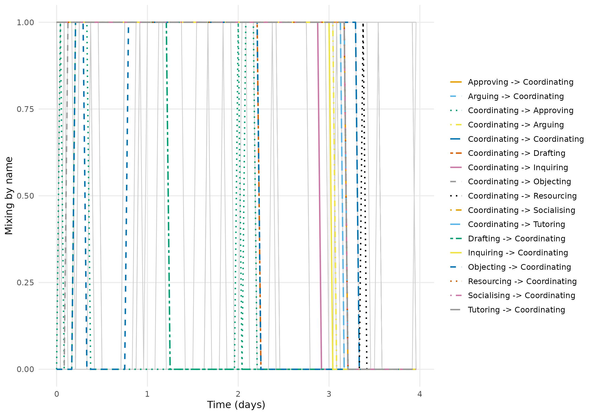
Duration
durations() summarises relational spells and their
durations over the observation period. Setting
unit = "node_ties" groups spells by their incident vertex,
while mode = "all" includes both incoming and outgoing
incidences. The requested measures are the incident spell count
("events"), summed incident duration
("total"), and union duration ("union"). A
self-link contributes twice to the additive counts and durations, once
for each endpoint. Summed duration includes overlapping spells
separately, whereas union duration counts each period of activity
once.
node_ties <- durations(dn, unit = "node_ties", mode = "all",
measure = c("events", "total", "union"))
node_ties## # Incident tie duration (node-level)
## # 9 vertices | mode all | time in days
## # measures: events, total, union
## # durations in days
## node measure value
## Approving events 5825.000
## Arguing events 6174.000
## Coordinating events 2713.000
## Drafting events 779.000
## Inquiring events 1892.000
## Objecting events 109.000
## Resourcing events 20999.000
## Socialising events 5493.000
## Tutoring events 2034.000
## Approving total 5355.039
## Arguing total 5539.510
## Coordinating total 1389.779
## # 15 more rows. summary() aggregates them; plot() draws them.
plot(node_ties)
Resourcing has 20,999 incident spell counts with a
summed duration of 22,781 days, compared with 109 and 71 days for
Objecting. These summed durations accumulate time across
spell incidences and can therefore exceed the observation period. Union
duration is bounded by the four-day observation period; six of the nine
categories have at least one incident spell active throughout this
period.
Setting unit = "pair" computes the same summaries for
each ordered pair of contribution categories. Including
"mean" additionally returns the mean spell duration.
pair_duration <- durations(dn, unit = "pair",
measure = c("events", "total", "union", "mean"))
pair_duration## # Relationship duration (edge-level)
## # time in days
## # measures: events, mean, total, union
## # durations in days
## from to measure value
## Approving Approving events 719
## Approving Arguing events 417
## Approving Coordinating events 30
## Approving Drafting events 30
## Approving Inquiring events 110
## Approving Objecting events 4
## Approving Resourcing events 1353
## Approving Socialising events 385
## Approving Tutoring events 100
## Arguing Approving events 415
## Arguing Arguing events 670
## Arguing Coordinating events 44
## # 308 more rows. summary() aggregates them; plot() draws them.
plot(pair_duration)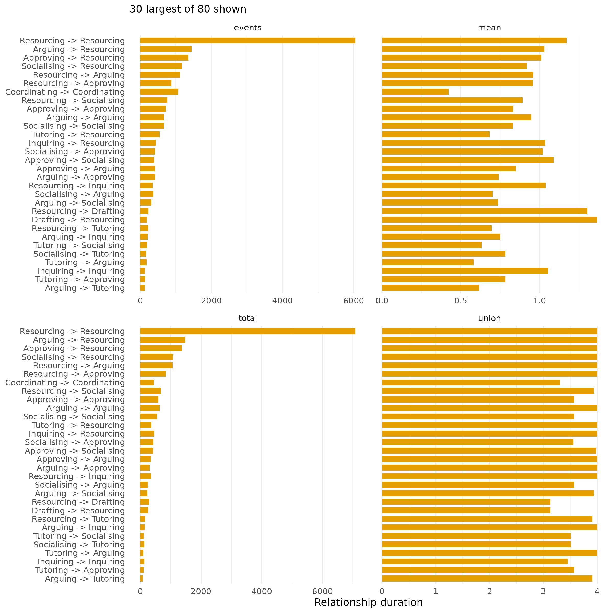
Spell counts vary substantially across ordered pairs. For example,
1,353 spells connect Approving to Resourcing,
compared with four connecting Approving to
Objecting.
Reachability and temporal centrality
Temporal reachability describes whether vertices can be connected
through time-respecting paths, whose successive traversals follow
chronological order and respect tie availability (Kempe, Kleinberg and
Kumar, 2002). reachability() computes the proportion
("reach") and number ("reach_count") of other
vertices reachable along these paths. Setting
direction = "both" requests both forward reachability and
backward reachability: which categories a focal category can reach and
which can reach it.
reach <- reachability(dn, direction = "both",
measure = c("reach", "reach_count"))
reach## # Reachability (node-level)
## # 9 vertices | time in days
## # measures: forward_reach, forward_reach_count, backward_reach, backward_reach_count
## # count and share of other vertices joined by a time-respecting path
## node measure value
## Approving forward_reach 1
## Arguing forward_reach 1
## Coordinating forward_reach 1
## Drafting forward_reach 1
## Inquiring forward_reach 1
## Objecting forward_reach 1
## Resourcing forward_reach 1
## Socialising forward_reach 1
## Tutoring forward_reach 1
## Approving forward_reach_count 8
## Arguing forward_reach_count 8
## Coordinating forward_reach_count 8
## # 24 more rows. summary() aggregates them; plot() draws them.
plot(reach)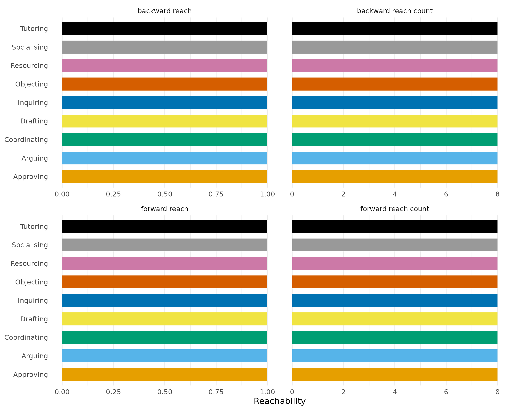
Every category can reach all eight other categories and can be reached from all eight. Under the specified spell durations and observation period, reachability therefore does not differentiate the categories. Temporal centrality and path analysis provide further information about arrival times and the routes connecting them.
Temporal closeness measures how quickly a vertex can reach other
vertices, whereas temporal betweenness measures its contribution to
earliest-arrival paths between other vertices (Pan and Saramäki, 2011).
These measures are requested through path_centrality().
When traversal has zero duration, paths composed of ties active at
time zero can arrive immediately, yielding zero latency and potentially
unbounded temporal closeness. Setting traversal_time = 0.1
imposes a traversal duration of one tenth of a day per tie. This is an
analytical assumption rather than an observed response time.
temporal <- path_centrality(dn, measure = c("closeness", "betweenness"),
traversal_time = 0.1)
temporal## # Temporal centrality (node-level)
## # 9 vertices | traversal 0.1 days per hop | time in days
## # measures: closeness, betweenness
## # computed on time-respecting paths across the whole window
## node measure value
## Approving closeness 7.710069
## Arguing closeness 9.301324
## Coordinating closeness 8.269624
## Drafting closeness 7.010284
## Inquiring closeness 8.375948
## Objecting closeness 5.512050
## Resourcing closeness 8.577492
## Socialising closeness 9.731100
## Tutoring closeness 10.000000
## Approving betweenness 0.000000
## Arguing betweenness 2.885714
## Coordinating betweenness 0.400000
## # 6 more rows. summary() aggregates them; plot() draws them.
plot(temporal)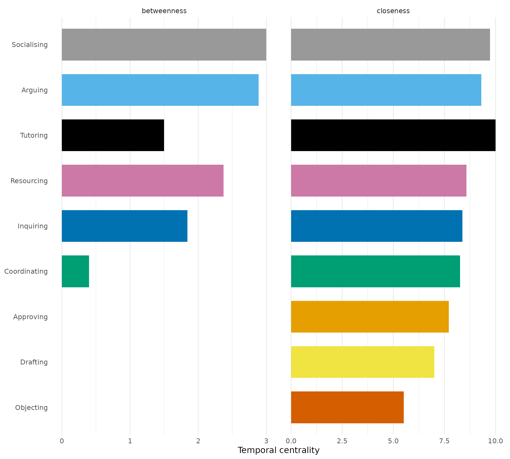
Tutoring has the highest temporal closeness (10),
corresponding to the reciprocal of the specified traversal duration: it
reaches every other category directly without waiting.
Objecting has the lowest temporal closeness (5.5). Temporal
betweenness is concentrated in Socialising,
Arguing, and Resourcing, whereas
Approving, Drafting, and
Objecting are not intermediate vertices on any
earliest-arrival path between other categories.
Paths
paths() identifies earliest-arrival paths from the
category specified by from, minimising hop count among
paths with the same earliest arrival. The following call uses the same
traversal duration as the temporal centrality analysis. In the result,
arrival_time records the earliest arrival at each
destination, n_hops records the number of traversed ties,
and n_paths records the number of optimal paths. When the
optimal session is unique, path_session identifies the
course containing the ties that achieve that arrival time. The plot
displays the resulting paths as a tree.
from_inquiring <- paths(dn, from = "Inquiring", traversal_time = 0.1)
from_inquiring## # Time-respecting paths from 'Inquiring', from t = 0
## # reaches 8 of 8 other vertices | time in days
## # routes are endpoint-specific session-integral optima, not one predecessor tree
## # traversal 0.1 days per hop
## node reachable arrival_time attained latency n_hops n_paths
## Approving TRUE 0.1077083 TRUE 0.1077083 1 1
## Arguing TRUE 0.1000000 TRUE 0.1000000 1 5
## Coordinating TRUE 0.1052199 TRUE 0.1052199 1 1
## Drafting TRUE 0.1000000 TRUE 0.1000000 1 2
## Inquiring TRUE 0.0000000 TRUE 0.0000000 0 1
## Objecting TRUE 0.1891667 TRUE 0.1891667 1 1
## Resourcing TRUE 0.1000000 TRUE 0.1000000 1 9
## Socialising TRUE 0.1000000 TRUE 0.1000000 1 2
## Tutoring TRUE 0.1530208 TRUE 0.1530208 1 1
## path_session n_best_sessions
## C 1
## <NA> 4
## D 1
## <NA> 2
## <NA> 0
## C 1
## <NA> 5
## <NA> 2
## A 1
plot(from_inquiring)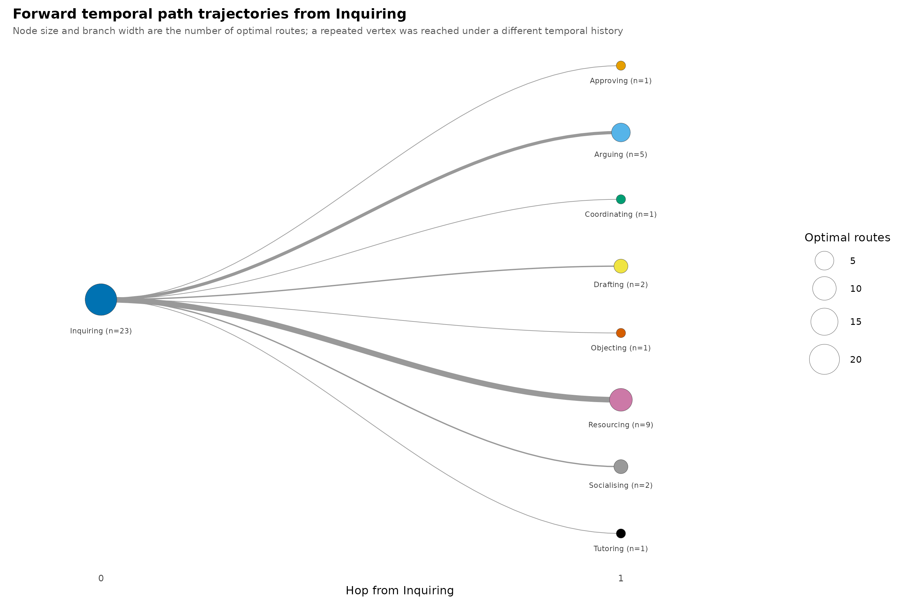
From Inquiring, every category is reachable in one hop.
Arrival at Arguing, Drafting,
Resourcing, and Socialising occurs at day 0.1,
requiring only the specified traversal duration. Objecting
is reached last, at day 0.189. Nine equally early paths reach
Resourcing.
Backward path analysis identifies the latest departure times that
permit arrival at a focal category by a specified deadline. Setting
direction = "backward" makes from the focal
destination, while start and end delimit the
observation period. In this result, arrival_time contains
the supremum of feasible departure times, and latency is
the difference between the deadline and that value. An excluded interval
endpoint may yield a supremum that cannot itself be attained; this is
indicated by attained = FALSE.
into_approving <- paths(dn, from = "Approving", direction = "backward",
start = 0, end = 4, traversal_time = 0.1)
into_approving## # Time-respecting paths into 'Approving', from t = 4
## # reaches 8 of 8 other vertices | time in days
## # routes are endpoint-specific session-integral optima, not one predecessor tree
## # traversal 0.1 days per hop
## node reachable arrival_time attained latency n_hops n_paths
## Approving TRUE 4.000000 TRUE 0.0000000 0 1
## Arguing TRUE 3.900000 TRUE 0.1000000 1 1
## Coordinating TRUE 3.409097 TRUE 0.5909028 2 1
## Drafting TRUE 3.030394 TRUE 0.9696065 2 3
## Inquiring TRUE 3.800000 TRUE 0.2000000 2 2
## Objecting TRUE 2.828785 TRUE 1.1712153 2 2
## Resourcing TRUE 3.900000 TRUE 0.1000000 1 1
## Socialising TRUE 3.800000 TRUE 0.2000000 2 1
## Tutoring TRUE 3.800000 TRUE 0.2000000 2 2
## path_session n_best_sessions
## <NA> 0
## A 1
## B 1
## A 1
## A 1
## B 1
## A 1
## A 1
## A 1
plot(into_approving)
Arguing and Resourcing can depart at day
3.9 and reach Approving by day 4. In contrast, the latest
feasible departure from Objecting is day 2.83,
corresponding to a latency of 1.17 days. This difference reflects the
availability of ties towards the end of the observation period.
pathways() ranks routes across source vertices, with
top specifying the number returned. Counts represent
optimal paths grouped by vertex sequence, rather than observed
frequencies of message sequences. The plot represents each category
along a route at its arrival time. This call uses the default zero
traversal duration.
top_routes <- pathways(dn, top = 12)
top_routes## # Time-respecting pathways (69 distinct routes, showing 12)
## # 208 optimal routes counted, pooled over 9 source vertices
## from route endpoint
## Socialising Socialising -> Resourcing -> Inquiring Inquiring
## Inquiring Inquiring -> Resourcing -> Approving Approving
## Resourcing Resourcing -> Drafting Drafting
## Socialising Socialising -> Resourcing -> Approving Approving
## Resourcing Resourcing -> Arguing Arguing
## Resourcing Resourcing -> Inquiring Inquiring
## Tutoring Tutoring -> Resourcing Resourcing
## Socialising Socialising -> Arguing -> Inquiring Inquiring
## Arguing Arguing -> Resourcing -> Socialising -> Tutoring Tutoring
## Resourcing Resourcing -> Approving Approving
## Approving Approving -> Resourcing -> Coordinating Coordinating
## Arguing Arguing -> Resourcing -> Coordinating Coordinating
## count share n_hops arrival_time
## 14 0.06730769 2 0
## 10 0.04807692 2 0
## 9 0.04326923 1 0
## 9 0.04326923 2 0
## 8 0.03846154 1 0
## 8 0.03846154 1 0
## 6 0.02884615 1 0
## 6 0.02884615 2 0
## 6 0.02884615 3 0
## 5 0.02403846 1 0
## 5 0.02403846 2 0
## 5 0.02403846 2 0
plot(top_routes)
Timing
similarity() compares network structure across temporal
intervals. Setting both step and window to 0.5
produces non-overlapping half-day intervals. The default Jaccard
coefficient measures similarity between their tie sets, and the plot
displays the pairwise comparisons as a heatmap.
bin_similarity <- similarity(dn, step = 0.5, window = 0.5)
plot(bin_similarity)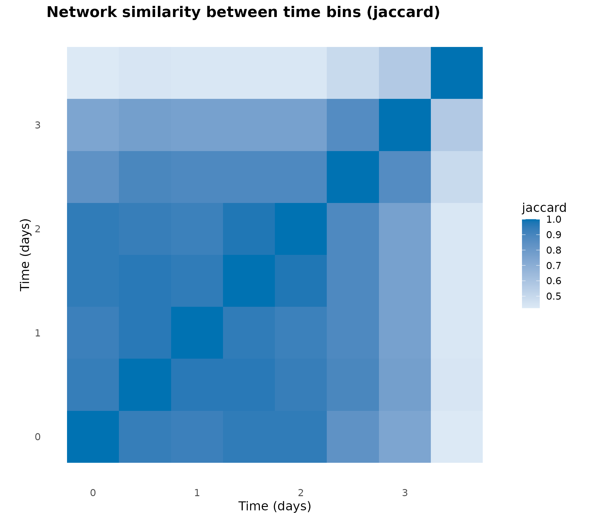
pshifts() classifies consecutive directed interactions
using Gibson’s (2003) thirteen participation shifts. These distinguish
whether an interaction from A to B is followed by an interaction
initiated by B, by A again, or by another vertex X. Here, vertices
represent contribution categories, so the classifications describe
changes in category-level relational endpoints.
shifts <- pshifts(dn)
shifts## # Participation shifts (Gibson 2003, 13 types)
## # 3423 classified turn transitions across 4 families
## shift family count
## AB-BA turn_receiving 391
## AB-B0 turn_receiving 51
## AB-BY turn_receiving 101
## A0-X0 turn_claiming 592
## A0-XA turn_claiming 105
## A0-XY turn_claiming 559
## AB-X0 turn_usurping 426
## AB-XA turn_usurping 135
## AB-XB turn_usurping 642
## AB-XY turn_usurping 170
## A0-AY turn_continuing 94
## AB-A0 turn_continuing 52
## AB-AY turn_continuing 105
plot(shifts)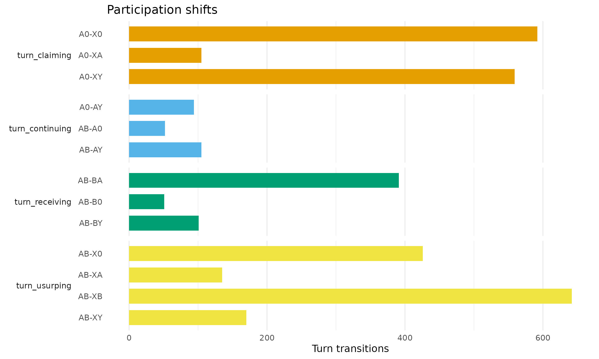
Of the 3,423 classified transitions, the largest family is turn usurping, in which a third category becomes the source of the next interaction. The most frequent individual shift is AB-XB, with 642 occurrences: a different source category addresses the same target category.
burstiness() characterises the temporal distribution of
activity using inter-event intervals. The burstiness coefficient
approaches 1 for highly heterogeneous intervals, is 0 for an exponential
inter-event distribution, and is −1 for equal intervals (Goh and
Barabási, 2008).
bursts <- burstiness(dn)
summary(bursts)## node measure n mean sd min max
## 1 Approving burstiness 1 6.582692e-01 NA 6.582692e-01 6.582692e-01
## 2 Approving events 1 5.106000e+03 NA 5.106000e+03 5.106000e+03
## 3 Approving memory 1 8.283281e-02 NA 8.283281e-02 8.283281e-02
## 4 Arguing burstiness 1 6.671291e-01 NA 6.671291e-01 6.671291e-01
## 5 Arguing events 1 5.504000e+03 NA 5.504000e+03 5.504000e+03
## 6 Arguing memory 1 1.645164e-01 NA 1.645164e-01 1.645164e-01
## 7 Coordinating burstiness 1 7.184227e-01 NA 7.184227e-01 7.184227e-01
## 8 Coordinating events 1 1.654000e+03 NA 1.654000e+03 1.654000e+03
## 9 Coordinating memory 1 1.756259e-02 NA 1.756259e-02 1.756259e-02
## 10 Drafting burstiness 1 6.355224e-01 NA 6.355224e-01 6.355224e-01
## 11 Drafting events 1 6.960000e+02 NA 6.960000e+02 6.960000e+02
## 12 Drafting memory 1 -8.726877e-03 NA -8.726877e-03 -8.726877e-03
## 13 Inquiring burstiness 1 6.284927e-01 NA 6.284927e-01 6.284927e-01
## 14 Inquiring events 1 1.763000e+03 NA 1.763000e+03 1.763000e+03
## 15 Inquiring memory 1 8.068968e-02 NA 8.068968e-02 8.068968e-02
## 16 Objecting burstiness 1 4.260920e-01 NA 4.260920e-01 4.260920e-01
## 17 Objecting events 1 1.080000e+02 NA 1.080000e+02 1.080000e+02
## 18 Objecting memory 1 8.584296e-02 NA 8.584296e-02 8.584296e-02
## 19 Resourcing burstiness 1 7.367974e-01 NA 7.367974e-01 7.367974e-01
## 20 Resourcing events 1 1.495000e+04 NA 1.495000e+04 1.495000e+04
## 21 Resourcing memory 1 1.111763e-01 NA 1.111763e-01 1.111763e-01
## 22 Socialising burstiness 1 6.260914e-01 NA 6.260914e-01 6.260914e-01
## 23 Socialising events 1 4.829000e+03 NA 4.829000e+03 4.829000e+03
## 24 Socialising memory 1 5.303993e-02 NA 5.303993e-02 5.303993e-02
## 25 Tutoring burstiness 1 5.623661e-01 NA 5.623661e-01 5.623661e-01
## 26 Tutoring events 1 1.956000e+03 NA 1.956000e+03 1.956000e+03
## 27 Tutoring memory 1 -1.894700e-02 NA -1.894700e-02 -1.894700e-02
plot(bursts)
All categories have positive burstiness coefficients, ranging from
0.43 for Objecting to 0.74 for Resourcing. The
memory coefficients are close to zero, indicating little correlation
between successive inter-event intervals.
One course group
The group variable is retained as a spell attribute
during network construction. A course group can therefore be selected by
filtering the existing temporal network. induce_subgraph()
with ties = group == "A_01" retains spells associated with
group A_01.
one_group <- induce_subgraph(dn, ties = group == "A_01")
summary(one_group)## property value
## 1 format threaded
## 2 directed yes
## 3 vertices 9
## 4 edge spells 2425
## 5 distinct pairs 53
## 6 time unit days
## 7 observed from 0
## 8 observed to 4
## 9 span 4
## 10 bin width 1
## 11 time bins 4
## 12 mean snapshot density 0.559
## 13 temporal density not computed
## 14 sessions 1
## 15 vertex attributes noneThe resulting subnetwork contains 2,425 spells across 53 of the 81 possible ordered pairs, with a mean snapshot density of 0.559 and one session.
Setting type = "events" displays reply events with
contribution categories on the vertical axis. Specifying
time = "clock" positions events at their recorded times,
while blend = TRUE interpolates link colours between their
source and target categories.
plot(one_group, type = "events")
plot(one_group, type = "events", time = "clock", blend = TRUE)
Graph-level metrics can be computed for the subnetwork using the same hourly intervals as the full network.
group_structure <- metrics(one_group,
measure = c("density", "edges", "reciprocity",
"connectedness"),
step = 1 / 24, window = 1 / 24)
plot(group_structure, type = "ridge")
Interpretation
In this synthetic example, Resourcing is incident to the
largest number of reply links and is frequently reachable through
multiple equally early paths. Together with Socialising and
Arguing, it accounts for much of the temporal betweenness.
Objecting has comparatively few incident replies, the
lowest temporal closeness, and no temporal betweenness.
Under the specified construction, relational spells remain active until discussion termination, and every category is temporally reachable from every other category. Differences in arrival times and intermediate categories provide additional distinctions that reachability alone does not capture. These results illustrate the analytical methods applied to the synthetic dataset and do not constitute empirical findings about the original study.
Limitations
Maintaining each relational spell until discussion termination is a modelling assumption that increases tie availability and contributes to high network density and complete reachability. Shorter spell durations could produce sparser networks, longer waiting times, or unreachable destinations. The four-day observation period also truncates longer discussions for measurement, without modifying their raw spell endpoints.
Vertices represent contribution categories rather than individual participants; consequently, the analysis characterises relationships among categories and does not identify interpersonal interaction patterns. Replies assigned multiple categories may contribute multiple ties, affecting spell counts and accumulated durations. Temporal path results additionally depend on the specified traversal duration.
The dataset is synthetic and based on the original study data. Its results serve to demonstrate package functionality; correspondence with empirical patterns in the original data requires separate assessment.
References
Freeman, L. C. (1979). Centrality in social networks: conceptual clarification. Social Networks, 1(3), 215–239.
Freeman, L. C., Borgatti, S. P., & White, D. R. (1991). Centrality in valued graphs: a measure of betweenness based on network flow. Social Networks, 13(2), 141–154.
Gibson, D. R. (2003). Participation shifts: order and differentiation in group conversation. Social Forces, 81(4), 1335–1380.
Goh, K.-I., & Barabási, A.-L. (2008). Burstiness and memory in complex systems. EPL (Europhysics Letters), 81(4), 48002.
Holland, P. W., & Leinhardt, S. (1976). Local structure in social networks. Sociological Methodology, 7, 1–45.
Kempe, D., Kleinberg, J., & Kumar, A. (2002). Connectivity and inference problems for temporal networks. Journal of Computer and System Sciences, 64(4), 820–842.
Krackhardt, D. (1994). Graph theoretical dimensions of informal organizations. In K. M. Carley & M. J. Prietula (Eds.), Computational organization theory (pp. 89–111). Lawrence Erlbaum.
Kundu, S., Murthy, C. A., & Pal, S. K. (2011). A new centrality measure for influence maximization in social networks. In Pattern Recognition and Machine Intelligence (Lecture Notes in Computer Science 6744, pp. 242–247). Springer.
Morris, M., Handcock, M. S., & Hunter, D. R. (2008). Specification of exponential-family random graph models: terms and computational aspects. Journal of Statistical Software, 24(4).
Pan, R. K., & Saramäki, J. (2011). Path lengths, correlations, and centrality in temporal networks. Physical Review E, 84(1), 016105.
Saqr, M., López-Pernas, S., & Törmänen, T. (2026). A temporal network approach to reveal the longitudinal dynamics of CSCL group regulation and productive collaboration. International Journal of Computer-Supported Collaborative Learning, 21, 237–270. https://doi.org/10.1007/s11412-025-09464-5
Saqr, M., & Nouri, J. (2020). High resolution temporal network analysis to understand and improve collaborative learning. In Proceedings of the Tenth International Conference on Learning Analytics & Knowledge (pp. 314–319). ACM.
Wasserman, S., & Faust, K. (1994). Social network analysis: methods and applications. Cambridge University Press.